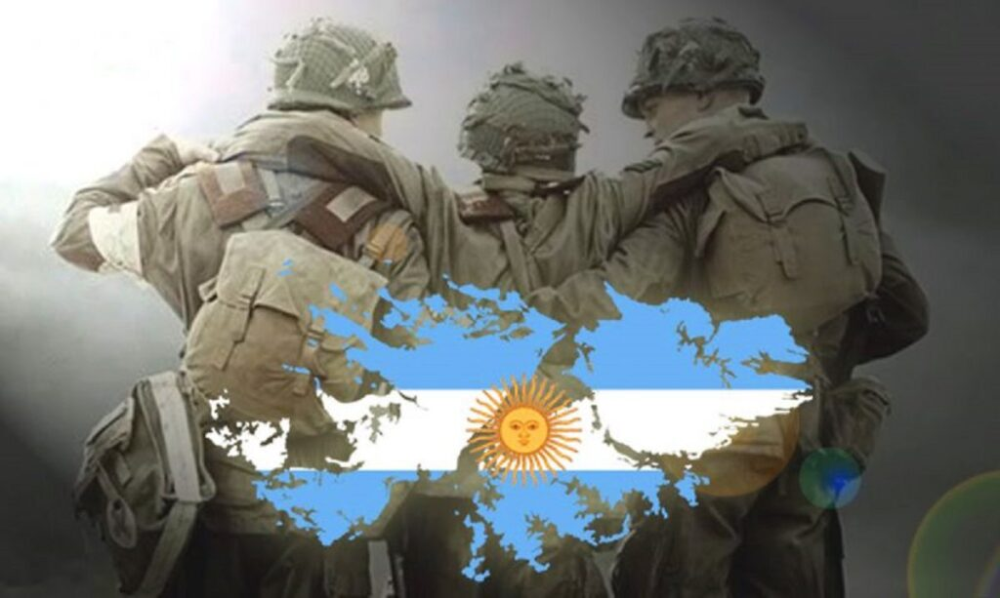

2 de Abril - Día del Veterano y de los Caídos en la Guerra de Malvinas
El 2 de abril se conmemora el inicio del conflicto en las Islas Malvinas entre Argentina y el Reino Unido en 1982. Se recuerda y honra a los veteranos y caídos en la guerra, reafirmando el reclamo de soberanía sobre el archipiélago.
El 2 de abril de 1982, las tropas argentinas desembarcaron en las Islas Malvinas para recuperar el territorio ocupado por el Reino Unido desde 1833. Ese día marcó el inicio de la Guerra de Malvinas, un conflicto breve pero profundamente significativo para la identidad nacional.
Durante 74 días, soldados argentinos enfrentaron condiciones extremas, con gran valentía, en una guerra desigual. El conflicto terminó el 14 de junio con la rendición argentina, pero dejó una huella imborrable en la memoria colectiva.
Desde 2001, esta fecha se conmemora como el "Día del Veterano y de los Caídos en la Guerra de Malvinas", rindiendo homenaje a los 649 argentinos que perdieron la vida y a los miles de excombatientes que hoy siguen defendiendo con orgullo la causa Malvinas.